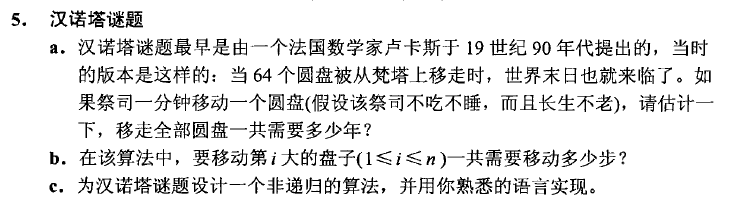
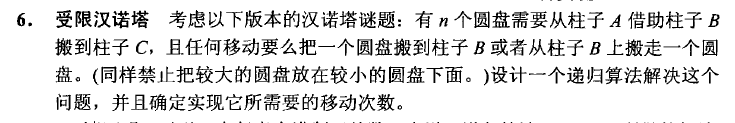

汉诺塔问题总结
汉诺塔问题
在学习 Anany Levitin所著的《算法设计与分析基础》（《Introduction to The Design and Analysis of Algorithms》) 一书时做练习2-4的5,6的时候遇到一些困难，遂开始研究汉诺塔问题。本文章将会使用Go语言进行实现。
参考资料:
https://suiwo.xyz/2020/01/04/%E6%B1%89%E8%AF%BA%E5%A1%94%E9%97%AE%E9%A2%98%E6%80%BB%E7%BB%93/
https://www.bilibili.com/video/BV18J411p7KE

a: 总时间应该等于 总移动次数*移动一次的时间。所有关键就是求n个圆盘(解出通项嘛)移动到另一个柱子的移动次数。
答：假如说有n个盘子要挪An步，那么有n+1个盘子可以先通过An步把上面的n个盘子挪到第三个柱子上，再挪最大的盘子，最后把n个盘子挪到大的上面，共2An+1步，所以A(n+1)=2An+1
这样计算下来An=2^n-1（2的n次方减1）
64个圆盘则需要 2的64次方-1 分钟 才能移动完
b:
答：要移动第i大的盘子的充分条件是，第i大的盘子位于某个柱子的顶端且其移动有地方放置。
潜在条件：第i大的盘子还没动，比i大的盘子也不可能有移动过。
所以可以推导出来，当第i大的盘子可以移动的时候，三个柱子的情况分别为（不分顺序）
柱子1：从第i大的盘子到第n大的盘子
柱子2：空柱子
柱子3：从第1大的盘子到第i-1大的盘子
所以 可以推导出 需要移动第i大的盘子需要移动的步数 与直接将i-1个圆盘通过一个中间柱移动至另一个柱子的次数相同
所以答案为 2的(i-1)次方 -1
c：
既然需要设计非递归算法，那先实现递归算法看看
汉诺塔问题基础版递归实现
实现：
1 | func BasisByRecursive(n int){ |
示例：
1 | func ExampleBasisByRecursive() { |
汉诺塔问题基础版非递归实现Ⅰ
最开始我是使用JAVA语言实现的，不知道怎么就凑出了正确，对实现理解不是很够。
1 | public static class HanNuoInfo{ |
之后看了资料才更加理解了 以下是go语言实现。
实现：
1 | type HanNuoTaInfo struct { |
示例：
1 | func ExampleBasisByIter() { |
汉诺塔基础版非递归实现Ⅱ
经过输出结果，发现规律每次都执行这样一个过程：
将前三个柱子顶其中最小圆盘放置下一个柱子(a->b,b->c,c->b)
移动之后的剩余两个柱子，将其中小的圆盘放置另一个柱子的上面
经过实现结果发现 如果圆盘个数为奇数 圆盘将会全部转移到b上 所以其实开始就把 b 和 c 调换个顺序就ok
定义柱子类：
1 | type pillars struct { |
实现：
1 | func BasisByIter3(n int){ |
示例：
1 | func ExampleBasisByIter3() { |
汉诺塔进阶 受限汉诺塔

受限汉诺塔递归实现
首先我们尝试使用递归方式实现，然后进行常见情况分析
假设剩余N层塔都在左，希望全都移到中
，则有下面三个步骤
- 将1~N-1层从左移到右，该过程为递归
- 将N层从左移到中
- 将1~N-1层从右移到中，该过程为递归
假设剩余N层塔都是从中移到右，或者从中移到左，或者从有右到中，其实原理与情况1相同，所以不做赘述
假设剩余N层塔都在左，希望都移到右
，则有下面五个步骤
- 将1~N-1层从左移到右，该过程为递归
- 将N层从左移到中
- 将1~N-1层从右移到左，此过程为递归
- 将N层从中移到右
- 将1~N-1层从左移到右，此过程为递归
（↑此处为copy博客）
实现：
1 | func LimitedByRecursive(n int){ |
示例：
1 | func ExampleLimitedByRecursive() { |
受限汉诺塔 非递归实现
我们把左、中、右三个地点抽象成栈，依次记为LS、MS和RS。最初所有的塔都在LS上。那么如上4个动作就可以看作是：某一个栈（from）把栈顶元素弹出，然后压入到另一个栈里（to），作为这一个栈（to）的栈顶。
例如，如果是7层塔，在最初时所有的塔都在LS上，LS从栈顶到栈底就依次是1～7，如果现在发生了“左”到“中”的动作，这个动作对应的操作是LS栈将栈顶元素1弹出，然后1压入到MS栈中，成为MS的栈顶。其他操作同理。
一个动作能发生的先决条件是不违反小压大的原则。
from栈弹出的元素num如果想压入到to栈中，那么num的值必须小于当前to栈的栈顶。还有一个原则不是很明显，但也是非常重要的，叫相邻不可逆原则，解释如下：
- 我们把4个动作依次定义为：
L-＞M、M-＞L、M-＞R和R-＞M。 - 很明显，
L-＞M和M-＞L过程互为逆过程，M-＞R和R-＞M互为逆过程。 - 在修改后的汉诺塔游戏中，如果想走出最少步数，那么任何两个相邻的动作都不是互为逆过程的。举个例子：如果上一步的动作是
L-＞M，那么这一步绝不可能是M-＞L，直观地解释为：你在上一步把一个栈顶数从“左”移动到“中”，这一步为什么又要移回去呢？这必然不是取得最小步数的走法。同理，M-＞R动作和R-＞M动作也不可能相邻发生。
有了小压大和相邻不可逆原则后，可以推导出两个十分有用的结论–非递归的方法核心结论：
- 游戏的第一个动作一定是
L-＞M，这是显而易见的。 - 在走出最少步数过程中的任何时刻，4个动作中只有一个动作不违反小压大和相邻不可逆原则，另外三个动作一定都会违反。
对于结论2，现在进行简单的证明。
因为游戏的第一个动作已经确定是L-＞M，则以后的每一步都会有前一步的动作。
假设前一步的动作是L-＞M：
- 根据小压大原则，
L-＞M的动作不会重复发生。 - 根据相邻不可逆原则，
M-＞L的动作也不该发生。 - 根据小压大原则，
M-＞R和R-＞M只会有一个达标。
假设前一步的动作是M-＞L：
- 根据小压大原则，
M-＞L的动作不会重复发生。 - 根据相邻不可逆原则，
L-＞M的动作也不该发生。 - 根据小压大原则，
M-＞R和R-＞M只会有一个达标。
假设前一步的动作是M-＞R：
- 根据小压大原则，
M-＞R的动作不会重复发生。 - 根据相邻不可逆原则，
R-＞M的动作也不该发生。 - 根据小压大原则，
L-＞M和M-＞L只会有一个达标。
假设前一步的动作是R-＞M：
- 根据小压大原则，
R-＞M的动作不会重复发生。 - 根据相邻不可逆原则，
M-＞R的动作也不该发生。 - 根据小压大原则，
L-＞M和M-＞L只会有一个达标。
综上所述，每一步只会有一个动作达标。那么只要每走一步都根据这两个原则考查所有的动作就可以，哪个动作达标就走哪个动作，反正每次都只有一个动作满足要求，按顺序走下来即可
(↑以上copy博客)
柱子类(直接用之前的就ok)：
1 | type pillars struct { |
实现：
1 | //存放四种状态 |
示例：
1 | func ExampleLimitedByIter() { |